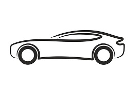

RaMa Auto

Za zrodom spoločnosti RaMa Auto nestojí túžba po zisku a úspechu
Začiatky firmy RaMa Auto siahajú do roku 1989, kedy pán Fridrich Bors spolu so svojou manželkou, Máriou, naviazali spoluprácu s "Automobilové závody, N.P." v rámci záručných prehliadok a opráv. V roku 1992 získali licenciu od Škoda Auto, a.s. na predaj a opravu automobilov tejto značky.